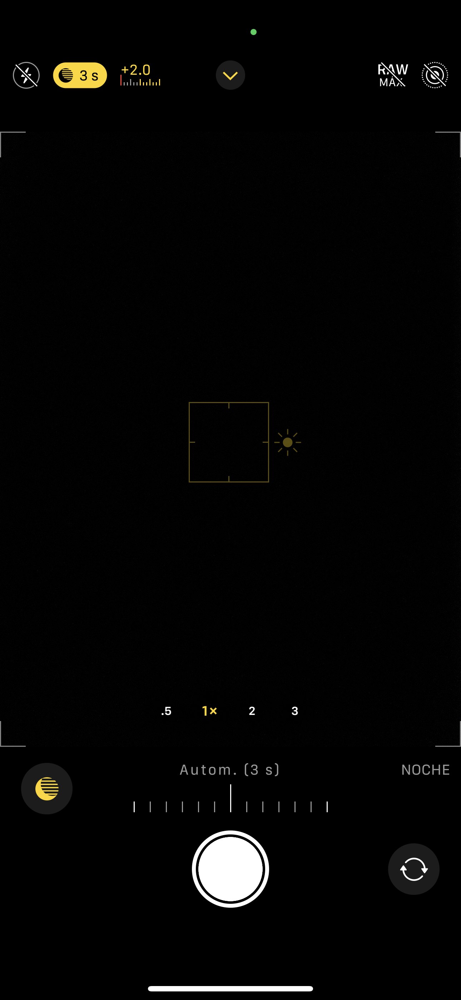
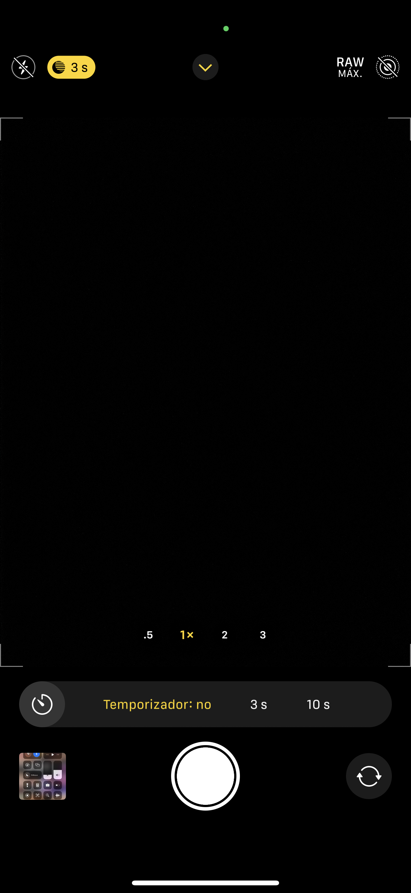
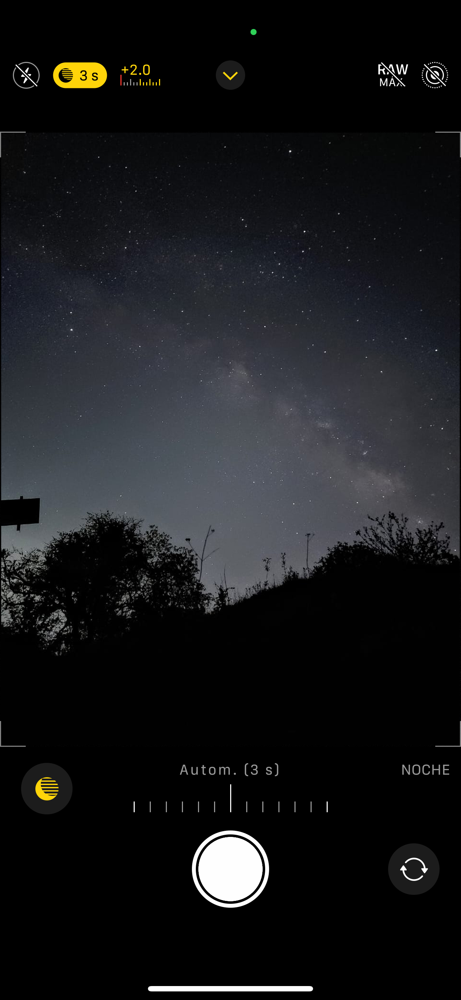
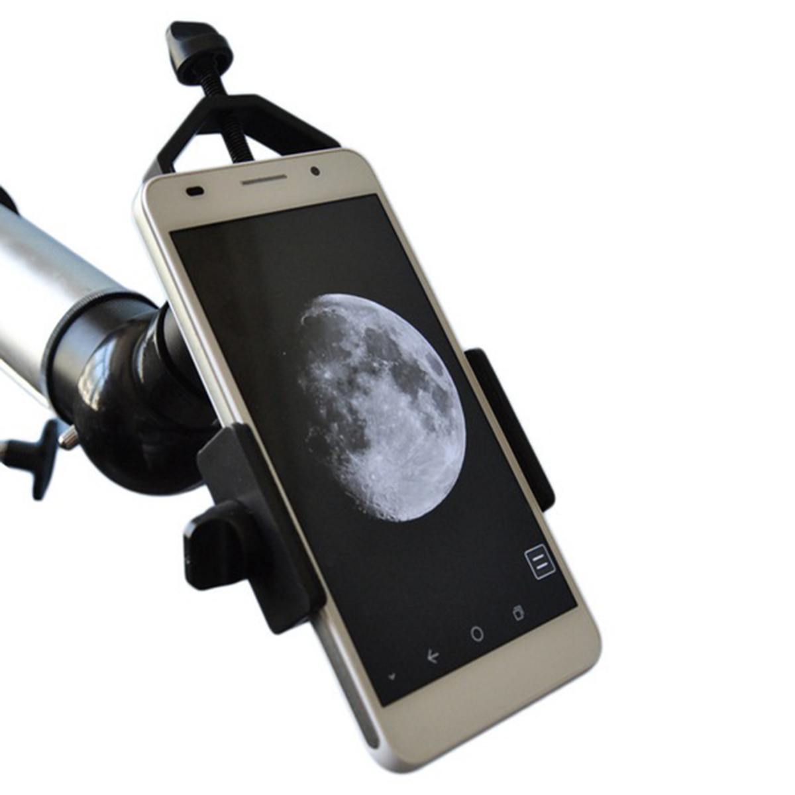

Equipo

La astrofotografía con un teléfono celular es una excelente manera de comenzar a explorar el cielo nocturno y capturar impresionantes imágenes de estrellas, la Luna, planetas y otros objetos celestes. En esta guía, aprenderás cómo hacer astrofotografía con tu teléfono, desde los conceptos básicos hasta algunos consejos avanzados.
- Telefono celular
- tripode
- Mapa estelar
- Telescopio (opcional)
Cualquier teléfono celular moderno con una cámara de alta resolución puede ser utilizado para astrofotografía.
Un trípode estable es esencial para mantener el teléfono inmóvil durante la captura de imágenes.
Instala una aplicación de mapas estelares para identificar y ubicar objetos celestes en el cielo.
Si tienes acceso a un telescopio, puedes acoplar tu teléfono celular a él para capturar imágenes más detalladas de objetos celestes.
Captura
- Activa el Modo de Avión Para evitar interferencias, activa el modo de avión en tu celular.
- En la aplicacion de camara de tu celular busca la opcion de modo profesional (pro) o el temporizador de exposicion.
- Desactiva el enfoque automático(focus) y configura el enfoque manualmente para evitar que la cámara cambie el enfoque durante la captura. (las estrellas deben de visualizarse como puntos blancos finos )
- Utiliza un temporizador o un control remoto para evitar el movimiento del teléfono al tocar el botón de captura.
- Ajusta la sensibilidad ISO y el tiempo de exposición según las condiciones de iluminación y el objeto que deseas fotografiar. Empieza con valores bajos y ve ajustando según sea necesario.
- Felicidades! has capturado tu objeto
- Pero eso no es todo. Estos pasos no solo te permiten fotografiar el cielo nocturno, sino que también pueden adaptarse para utilizar el ocular de un telescopio con el adaptador correspondiente. Es decir, puedes seguir estos mismos pasos para capturar imágenes no solo con tu celular, sino también con un telescopio, aprovechando su potencial para observar el cosmos.





Procesamientoimagenes
Una vez que has capturado tus imágenes de planetas o del sistema solar con tu celular y un telescopio, el procesamiento es una parte crucial para obtener los mejores resultados. Aquí te guiaremos a través de los pasos básicos utilizando software especializado como PIPP, Autostakkert y RegiStax.
- PIPP Descarga PIPP!
- Autostakkert Descarga AUTOSTAKKERT!
- RegiStax Descarga RegiStax 6!
Este es el primer programa que debemos utilizar y servirá para alinear los cuadros del vídeo logrado con nuestra cámara.
Autostakkert alineará y apilará automáticamente las imágenes, seleccionando las mejores partes de cada una para mejorar la calidad general.
especializado en procesamiento de imágenes astronómicas, especialmente diseñado para mejorar la calidad y el detalle de imágenes planetarias y lunares.